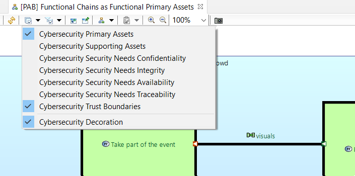
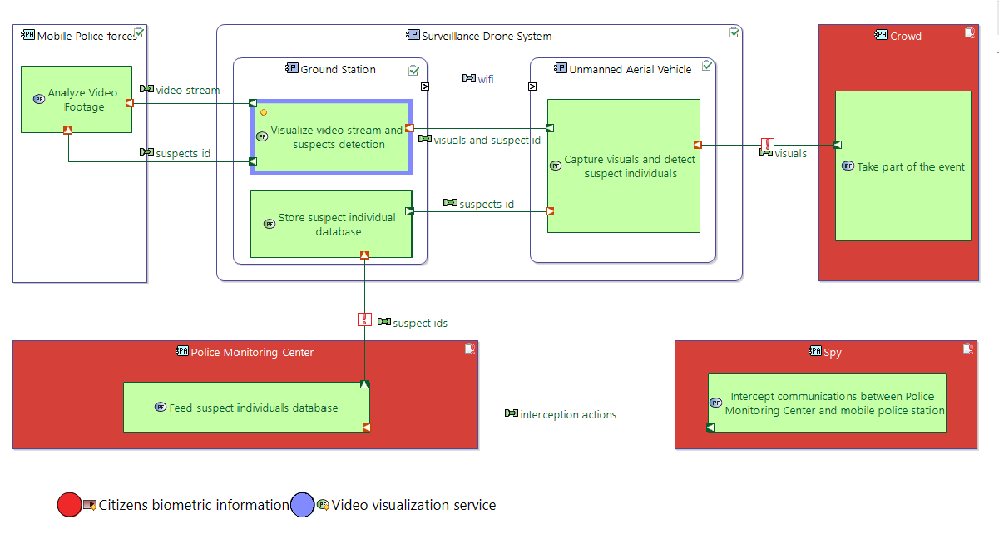

The intent of this viewpoint is to support effective co-engineering between systems and cybersecurity engineering teams when performing the following tasks:
To create a project with the Cybersecurity viewpoint activated automatically, select File->New->Cybersecurity Project from the application menu.
Cybersecurity Specific Properties of Model Elements can be seen in the Cybersecurity tab of the Properties View. This section lists the most important concepts and their properties.
An Actor is involved in Threats and allocates one or more Functions.
| Threat Source | Someone or something that could affect the product (ref: 87210649-DDQ-GRP-EN - Cyber Security For Architects Guide). | Yes/No |
| Threat Source Profile | Type of threat source. | 1 to 5 |
| Trusted | Ability to be relied on as honest or truthful. Threat Source = Yes => Trusted = false. | Yes/No |
| Rationale | Rationale on the cybersecurity attributes. The trustworthiness of an Actor is absolute, it does not depend on the Threat that the Actor is involved in, or a given security property. Details on this aspect and others can be exposed in this Rationale field. | Text |
A situation that is unwanted by the stakeholders and that is to be avoided. Threat is an abstract concept that is concretized by the following kinds of attacks:
| Eavesdropping | Secretly listening to the private conversation of others without their consent. |
| Theft and data alteration | Stealing, leaking data, modifying data, erasing data, attack against traceability or against rogue action detection. |
| Denial of Service | DoS attacks make a machine, a service or a network resource unavailable to its intended users. |
| Intrusion | Entering an information system without permission. |
| Tampering | Tampering attacks refer to many forms of sabotage (intentional modification of the information system in a way that makes them harmful). |
Threats are applied to Primary Assets. A Threat has the following additional attributes:
| Level | Priority level given to a Threat at a given stage of design process. It can be motivated by cybersecurity risk analysis; e.g. may be an indication of the likelihood of threat scenarios and the impact of the feared event associated to the threat. | 1 to 5 |
| Rationale | Rationale on the cybersecurity attributes. | Text |
Information, activity, process or functionality that is valuable for the customer and then needs to be protected (ref: 87210649-DDQ-GRP-EN - Cyber Security For Architects Guide). The Cybersecurity Viewpoint distinguishes between:
| Functional Primary Asset | Activity, process or functionality that is valuable for the customer and then needs to be protected. | Functions |
| Information Primary Asset | Information that is valuable for the customer and then needs to be protected. | Exchange Items |
The attributes of a Primary Asset are its corresponding Security Needs, i.e. the characteristics that can be compromised / affected by a threat (based on ref: 87210649-DDQ-GRP-EN - Cyber Security For Architects Guide) and their sensitivity levels. The following characteristics are considered here:
An asset can define a value between 0 and 3 for each of these attributes. Project/Product teams shall define the equivalences between these sensitivity levels and those specific to their standards framework.
Primary Assets are threatened by Threats.
Action, operation or service performed by the system, or by an actor interacting with the system (ref: Arcadia). Like Primary Assets, Functions can define values for Confidentiality, Integrity, Availability and Traceability.
| Data Storage | Indicates that the function represents a data storage functionality. | Yes/No |
| Remanent Data | Indicates that the function manipulates data in such a way that data (or parts of it) remains even after attempts have been made to remove or erase it. | Yes/No |
A Exchange Item describes a set of Data semantically coherent with regards to their usage in a given context: same communication principles, simultaneity of transportation, same non functional properties, indivisibility (an Exchange Item is monolithic). (ref. Arcadia) An Information Primary Asset references one or more Exchange Items. An Exchange Item can define values for Confidentiality, Integrity, Availability and Traceability.
The following diagram types are provided by the Capella Cybersecurity Viewpoint:
To create a Diagram, select the corresponding hyperlink from the Activity Explorer:
Threat diagrams are used to model System Threats, threatened Assets and Involved Actors:

Alternatively, select New Diagram/Table...->Threat Diagram on a component's context menu in the Capella Project Explorer.
The following tools are available:
| Threat |

|
Insert a new Threat into the diagram. |
| Functional Primary Asset |

|
Insert a new Functional Primary asset into the diagram. |
| Information Primary Asset |
|
Insert a new InformationPrimaryAsset into the diagram. |
| Actor |
|
Insert a new Actor into the diagram. |
| Involves |
|
Creates an involvement relationship from a Threat element to an Actor element. |
| Applicable to |
|
Creates an involvement relationship from a Threat element to a Functional or Information Primary Asset. |
| Actors |

|
Shows/Hides selected existing Actors on the diagram. |
| Threats |
|
Shows/Hides selected existing Threats on the diagram. |
| Functional Primary Assets |
|
Shows/Hides selected existing Functional Primary Assets on the diagram. |
| Information Primary Assets |
|
Shows/Hides selected existing Information Primary Assets on the diagram. |
Threat diagrams have an optional layer named "Threat Level Decorations". When this layer is enabled, each Threat's level value is displayed in parenthesis next to the Threat element:


System Architecture Diagrams are extended Capella Physical Architecture Diagrams. Thus, most of the tools available in Cybersecurity PAB diagrams are documented here.
One additional tool is provided by the Viewpoint:
| Primary Assets |
|
Shows/Hides existing Functional or Information Primary Assets on the diagram. When a Primary Asset is added to a diagram, its color is chosen randomly from a set of predefined colors. Node elements related to the asset will then receive an emphasized border that matches the color of the asset element. Related edges will change the color to the color of the asset element. |
Several Layers are provided for Cybersecurity PAB Diagrams. A layer allows to change the presentation of a diagram in order to focus on specific aspects of the modeled system. Layers are activated in the diagram toolbar:

The Trust Boundaries Layer for Cybersecurity PAB diagrams will change the diagrams appearence: Trusted components and actors will change their background color to white, untrusted components and actors will change their color to red. Communication edges between Trusted and Untrusted elements, so called Trust Boundaries, will be decorated with a small flame icon:

Additional layers are provided to focus on Confidentiality, Integrity, Availability and Traceability needs for model elements. When one of these layers is active, elements with a higher respective security needs value are emphasized over elements with a lower security needs value:

The Cybersecurity Decorations Layer adds the following decorations to existing diagram elements. The layer is available on Cybersecurity PAB diagrams and Class Diagrams.
 Data Storage Data Storage
|
Indicates that the function represents a data storage functionality. |
 Trusted Actor Trusted Actor
|
Ability to be relied on as honest or truthful. |
 Untrusted Actor Untrusted Actor
|
Disability to be relied on as honest or truthful. |
 Remanent Data Remanent Data
|
Indicates that the function manipulates data in such a way that data (or parts of it) remains even after attempts have been made to remove or erase it. |
 ThreatSource ThreatSource
|
Someone or something that could affect the product (ref: 87210649-DDQ-GRP-EN - Cyber Security For Architects Guide). |
See Capella Exchange Scenario Documentation.
See Capella Class Diagram Documentation.
Cybersecurity model elements and their attributes and relationships are subject to certain constraints. These constraints can be verified by selecting Validate->Validate Model from any model element's context menu. A tabular description of constraints is listed here.